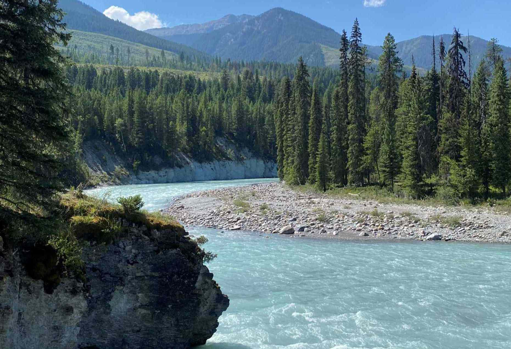

Fish Creek Park

Fish Creek Park is one of my favourite places bkladskljakdlsjfsjkldaslkjf
Hi there! Welcome to my travelogue, this is a small virtual tour of some of my favourite places I like to go to in nature that are all in Alberta! Please enjoy!
Fish Creek Park is one of my favourite places bkladskljakdlsjfsjkldaslkjf
The kootenay is a place I havent g ot to know that well yet dadfasdf
Bragg Creek is a cutsie Patootsie place.